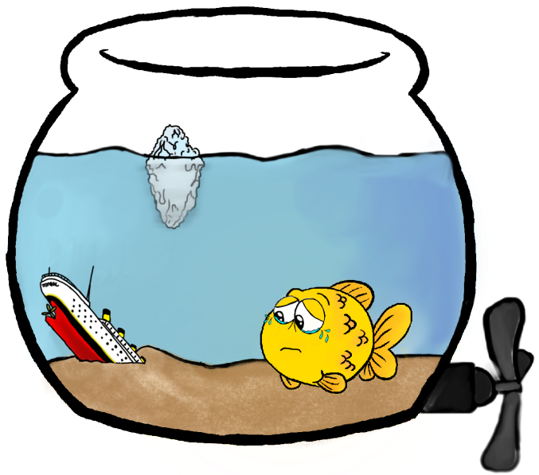

Vi befinner oss omtrent 3,8 kilometer dypt, og her ligger vraket av fronten til Titanic. Bakdelen ligger 600m borti her.
Vraket har ligget her i litt over 100 år, og det er mange som har prøvd å få titanic hevet. Noen har
foreslått å fylle vraket med bordtennisballer, eller med 180 000 tonn med vaselin. Noen har til og
med vært inne på å bruke en halv million tonn med flytende nitrogen for å lage et isberg rundt vraket
som skulle flyte opp til overflaten, men man har konkludert med at skipet er for skjørt.
Visste du at vraket faktisk blir brutt ned av organismer som spiser rust? Det vil antakeligvis
bli borte om en del år, så det var nok greit at jeg fikk tatt meg en tur før det var
for sent.

Dette har sått øverst på min bucket list helt siden jeg så filmen med Kate Winslet og
Leonardo DiCaprio for første gang. Det er den tristeste filmen jeg har sett i hele
mitt liv. Jeg gråt så mye første gang jeg så den at det nesten ble ulevelig for en
ferskvannsfisk i bollen min. Du vet like godt som jeg at det var plass til mer enn én
person på den døra!
Fordelen med å være gullfisk er at filmer er like spennende hver
gang siden jeg alltid glemmer hvordan de ender!
Nå vil jeg reise et annet sted. Skal vi dra tilbake til hovedmenyen?